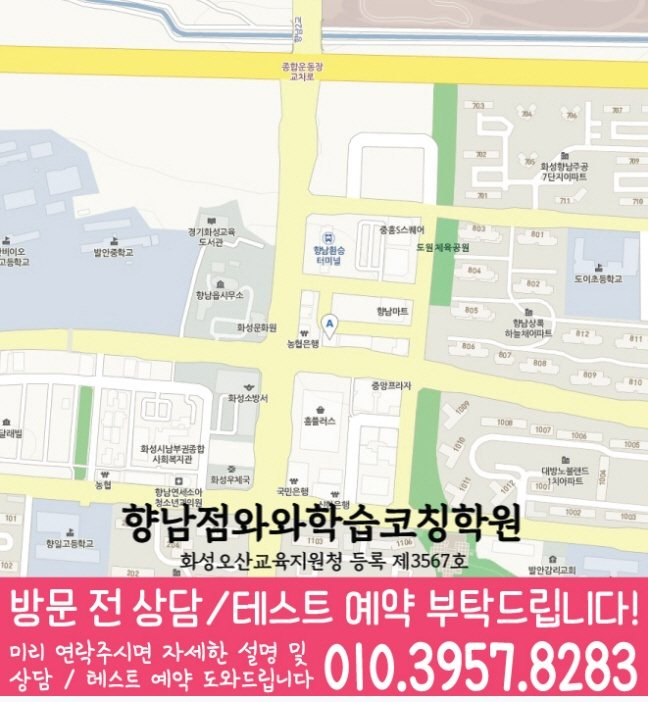

MIDDLE SCHOOL ENGLISH GUIDE
향남읍 중2 영어학원
경기 화성시 향남읍 중2 영어학원 선택을 위해 와와학습코칭센터 향남점 공개 정보와 교과서·문법·독해·어휘·서술형 학습 및 상담 기준을 정리했습니다.
향남읍경기 화성시
중2영어 가능 학년 기재



핵심 답변
향남읍 중2 영어학원, 무엇부터 확인해야 할까요?
향남읍에서 중2 영어학원을 비교할 때는 교과서 진도만 보지 말고 어휘 재현, 문법 적용, 독해 근거, 서술형 수정과 시험 전 복습 기록을 함께 살펴야 합니다. 숙제는 끝내지만 틀린 문장을 다시 써 보지 않아 같은 실수를 반복하는 학생이라면 특히 오답 재학습이 다른 영역으로 어떻게 연결되는지 확인하는 것이 좋습니다.
LOCAL ENGLISH STUDY GUIDE
경기 화성시 향남읍 중2 영어 학습 설계
와와학습코칭센터 향남점의 공개 정보와 기존 향남읍 영어 안내를 함께 볼 때 핵심은 학생이 설명을 들은 뒤 스스로 문장을 읽고 고칠 수 있는지입니다. 중2 과정에서는 오답 재학습을 중심으로 어휘·독해·서술형까지 이어지는지 확인해야 합니다. 화성시 향남읍의 학교 일정과 학생의 다른 과제량을 함께 놓고 보면 같은 학습량이라도 완료 날짜를 다르게 정해야 할 수 있습니다.
향남읍 중2 영어에서 함께 관리할 네 영역
문법을 답이 아닌 문장 구조로 확인
문법 문제의 정답 번호보다 문장 안에서 어떤 말이 무엇을 꾸미고 동사의 형태가 왜 달라지는지 표시한 뒤 변형 문장에 적용합니다. 향남읍 상담 기록에는 처음 진단한 내용과 다음 확인 날짜를 함께 적어 두어 실제 피드백이 계획에 반영됐는지 비교합니다.
어휘는 교과서 문맥과 함께 누적
새 단어와 이미 배운 표현을 따로 두지 않고 본문, 대화문과 학교 프린트에서 다시 만난 횟수를 기록합니다. 향남읍에서 이 기준을 적용할 때에는 오답 재학습이 약한 경우에는 이 활동을 한 번에 길게 하기보다 수업 직후와 주중으로 나눠 재현 여부를 확인합니다.
서술형은 수정 이유를 남기는 방식으로
고친 답안은 같은 날 한 번 쓰는 데서 끝내지 않고 며칠 뒤 비슷한 의미의 새 문장을 해설 없이 다시 작성합니다. 향남읍에서 이 기준을 적용할 때에는 와와학습코칭센터 향남점 상담에서는 이 기준이 평소 수업과 시험 범위 발표 이후에 각각 어떻게 달라지는지 질문해 보는 편이 좋습니다.
독해는 근거 문장과 연결어까지 표시
독해 오답은 단어 부족, 문장 구조, 내용 연결과 선택지 해석 중 어디에서 시작됐는지 나눠 다음 지문에 적용합니다. 향남읍에서 이 기준을 적용할 때에는 와와학습코칭센터 향남점에 문의하기 전에는 독해 정답의 근거 문장을 지문에서 직접 표시할 수 있는지를 적어 두면 이 항목을 학생 상황과 연결해 설명받기 쉽습니다.
발안중 등 학교 자료를 확인할 때의 기준
공개된 와와학습코칭센터 향남점 자료에는 발안중, 향남중, 하길중, 화성중 등이 수업 가능 학교로 적혀 있습니다. 실제 교과서와 시험 범위는 현재 학교 자료로 다시 확인합니다.
교과서와 부교재
시험 범위에 포함된 본문, 대화문, 추가 읽기 자료와 학교 프린트의 우선순위를 구분합니다. 향남읍에서 이 기준을 적용할 때에는 학생이 질문을 기다리지 않도록 막힌 문장에 표시하고, 와와학습코칭센터 향남점 수업에서 확인한 뒤 유사 문장에 적용하는 단계까지 이어지는지 봅니다.
시험 직전 재확인
향남읍의 시험 직전 점검은 새 문제 추가보다 기존 오류의 재현을 먼저 봅니다. 틀린 문장과 근거를 와와학습코칭센터 향남점에서 해설 없이 설명할 수 있는지 확인합니다. 경기 화성시 향남읍 학생에게 적용할 때는 중1 공백 복원 → 중2 교과서 연결 → 학교 프린트 적용 → 누적 복습의 순서가 주간 일정 안에서 가능한지도 함께 계산해야 합니다.
서술형 조건
문장 수, 핵심 표현, 어순과 문법 조건을 나누고 답안을 고친 이유까지 확인합니다. 향남읍에서 이 기준을 적용할 때에는 경기 화성시의 통학 시간까지 고려해 수업일과 복습일이 겹치지 않도록 배치해야 계획이 시험 전까지 유지됩니다.
오답 재학습을 중심으로 구성한 주간 수업 흐름
01. 최근 답안 진단
시험지와 과제에서 어휘·문법·독해·쓰기 오류를 분리하고 가장 먼저 바꿀 한 가지를 정합니다. 이 기준은 향남읍 중2 영어 선택을 위한 비교 항목이며 특정 점수 변화나 결과를 예상하게 하는 문구로 사용하지 않습니다.
02. 현재 단원 연결
복원한 개념을 현재 교과서 문장과 학교 자료에 바로 적용합니다. 향남읍에서 이 기준을 적용할 때에는 화성시 지역 학교라도 교과서와 평가 일정은 다를 수 있으므로 화성중의 현재 공지를 기준으로 분량을 다시 나눠야 합니다.
03. 학교 자료 연결
현재 학교 진도와 프린트에 적용하면서 정답 근거와 수정 이유를 말하게 합니다. 향남읍에서 이 기준을 적용할 때에는 와와학습코칭센터 향남점의 시간표와 함께 이 활동에 필요한 수업 외 복습 시간을 물어봐야 학생이 실제로 실행할 수 있는 분량을 정할 수 있습니다.
04. 서술형 복원
틀린 답안을 조건별로 고친 뒤 며칠 후 같은 의미의 새 문장을 다시 작성합니다. 향남읍에서 이 기준을 적용할 때에는 문장 구조를 끊어 읽은 뒤 같은 문법이 쓰인 새 문장에 적용합니다. 이 원칙을 발안중의 현재 진도와 대조하면 먼저 보완할 영역과 미뤄도 되는 영역을 나눌 수 있습니다.
향남읍 학생의 답안에서 시작하는 영어 점검 순서
진단 신호
향남읍에서는 풀이 시간은 충분하지만 질문을 남기지 않아 같은 오류가 이어지는지부터 살펴봅니다. 숙제는 끝내지만 틀린 문장을 다시 써 보지 않아 같은 실수를 반복하는 학생에게 같은 기준을 적용하면 막힌 위치를 진도보다 구체적으로 나눌 수 있습니다.
첫 학습 행동
본문 암기 전 문장 구조와 핵심 표현을 설명하게 해 외운 문장과 이해한 문장을 나눕니다. 공개 자료에 기재된 향남중의 실제 교과서와 시험 범위는 상담 시 최신 자료로 대조합니다.
완료 판단
오답 이유를 학생 말로 남기고 다음 확인 날짜까지 적어야 학습 기록이 다음 수업으로 이어집니다. 이 결과는 와와학습코칭센터 향남점 상담에서 다음 주 복습량을 조정하는 질문으로 사용합니다.
일정 배치
수업에서 발견한 오류를 다음 과제 첫 항목에 반영해 피드백과 주간 계획 사이의 간격을 줄입니다. 경기 화성시 향남읍에서 통학과 다른 과목 일정을 제외한 실제 영어 복습 시간을 먼저 계산합니다.
간격을 둔 재확인
향남읍 학습 기록에서는 수행평가 표현을 한 번 말한 결과보다 일정 간격을 두고 다시 재현되는지 확인합니다. 향남중 자료의 현재 범위와 겹치는 문장부터 확인합니다.
근거 기록
본문 학습 기록은 암기 여부와 구조 설명 여부를 나눠 변형 문제 준비 정도를 확인합니다. 이 기록을 와와학습코칭센터 향남점의 다음 수업 계획과 대조해 피드백이 실제 행동으로 이어지는지 봅니다.
상담 비교 기준
피드백이 자세하다는 표현보다 오류 원인과 다음 재확인 날짜가 실제 기록에 있는지 봅니다. 경기 화성시의 일정과 향남읍 학생이 확보한 복습 시간을 함께 놓고 판단합니다.
와와학습코칭센터 향남점에 문의할 때는 “설명 뒤 학생이 같은 구조의 문장을 직접 찾아 말하는 시간이 있는지”를 확인하고, 독해 정답의 근거 문장을 지문에서 직접 표시할 수 있는지도 최근 답안과 함께 준비하면 수업 설명을 학생 상황에 맞춰 비교하기 쉽습니다.
향남읍 중2 영어 학습 기록을 읽는 다섯 기준
답안에서 찾을 신호
향남읍 기록에서는 중1 문장 구조가 필요한 오류와 현재 중2 단원에서 생긴 오류를 따로 적습니다. 학교별 특징을 추정하지 않고 학생이 준비한 실제 범위와 공지를 근거로 삼습니다.
첫 수업의 행동
향남읍 학생에게는 문법 규칙은 이름을 말하는 단계보다 교과서 속 동일 구조를 찾는 단계부터 점검합니다. 와와학습코칭센터 향남점 상담에서는 이 행동이 실제 피드백에 남는지 확인합니다.
완료와 재확인
향남읍의 완료 기준은 다음과 같습니다. 수업 직후의 정답과 주중 재확인 결과가 모두 남아야 이해가 유지됐는지 판단합니다. 다음 확인일의 결과가 달라지면 향남읍의 복습 순서부터 다시 조정합니다.
주간 일정 배치
향남읍 주간표에는 통학과 다른 과목 시간을 뺀 실제 여유 시간을 기준으로 영어 분량을 다시 계산합니다. 발안중의 현재 일정은 학생이 가져온 자료로 다시 대조합니다.
상담에서 물을 질문
와와학습코칭센터 향남점에 문의할 때는 주간 점검 결과를 학생과 학부모에게 어떤 자료로 설명하는지 확인합니다. 독해 정답의 근거 문장을 지문에서 직접 표시할 수 있는지도 최근 답안과 함께 확인합니다.
기록 해석
향남읍의 영어 기록을 볼 때는 오래 걸린 문장은 단어·구조·내용 연결 중 지연이 시작된 지점을 짧게 적습니다. 와와학습코칭센터 향남점에서는 이 기록이 다음 과제에 반영되는지도 확인합니다.
가정 복습 연결
향남읍 학생의 실제 생활 시간에는 단어·본문·서술형의 복습일을 다르게 배치해 한날에 과제가 몰리지 않게 합니다. 실행 여부는 다음 상담에서 계획표와 함께 확인합니다.
다음 주 조정
향남읍의 다음 주 계획은 고정하지 않습니다. 서술형 조건 누락이 반복되면 제출 전 확인표를 다음 과제에도 동일하게 적용합니다. 조정 결과는 학생 답안으로 다시 확인합니다.
문제량보다 중요한 것은 학습 기록이 다음 수업과 시험 전 복습에 반영되는 과정입니다. 중1 공백 복원 → 중2 교과서 연결 → 학교 프린트 적용 → 누적 복습의 흐름이 학생 일정에 맞는지 상담에서 확인해 보세요. 공개 자료 기준으로 향남읍 중2 영어 상담이 가능한 학년 범위에 들어갑니다. 시간표와 개강 일정은 고정 정보로 단정하지 않고 다시 확인합니다.
VERIFIED LOCAL FACTS
향남읍 센터 정보와 수업 확인 항목
기존 전국학원 페이지와 공개 센터 자료에 있는 사실만 사용했으며, 기재되지 않은 학교나 운영 조건은 임의로 만들지 않았습니다.
경기 화성시 향남읍 발안로 103-6 J&H빌딩 402호
화성오산교육지원청 등록 제3567호
공개 센터 자료의 영어 가능 학년에 중2가 포함되어 있습니다. 실제 반 편성과 일정은 와와학습코칭센터 향남점 상담에서 확인해야 합니다.
수업 횟수·시간표·보강 기준과 함께 비교합니다.
공개 자료의 중학교 안내 · 4개
공개 자료의 영어 가능 학년
센터 교습비 자료 확인상담 전 체크리스트
향남읍 중2 영어학원 비교 전에 적어둘 내용
향남읍 학생의 시험지에서 독해 정답의 근거 문장을 지문에서 직접 표시할 수 있는지를 확인할 수 있는 문장과 수정 흔적을 한두 개 표시합니다.
숙제는 끝내지만 틀린 문장을 다시 써 보지 않아 같은 실수를 반복하는 학생에게 어휘·문법·독해·서술형 중 먼저 바꿀 영역을 하나 정하고 오답 재학습과의 연결을 메모합니다.
공개 영어 가능 학년 ‘초3, 초4, 초5, 초6, 중1, 중2, 중3, 고1’에 중2가 포함되는지와 현재 반 편성·시작일을 함께 확인합니다.
막힌 문장을 표시해 와와학습코칭센터 향남점 상담에서 확인하고 비슷한 문장을 혼자 다시 풀 날짜도 정합니다.
FAQ & PARENT VIEW
향남읍 중2 영어학원 자주 묻는 질문과 학부모 상담 관점
화면 질문과 답변은 JSON-LD에도 동일하게 반영했습니다. 상담 관점은 특정 성과를 보장하는 후기가 아니라 비교에 참고할 수 있도록 재구성한 예시입니다.
향남읍 중2 영어학원 상담 전에 어떤 영어 자료를 준비하면 좋나요?
최근 영어 시험지, 교과서와 학교 프린트, 현재 단어장, 틀린 서술형 답안을 준비하세요. 특히 독해 정답의 근거 문장을 지문에서 직접 표시할 수 있는지를 메모하면 시작점을 더 구체적으로 설명할 수 있습니다. 숙제는 끝내지만 틀린 문장을 다시 써 보지 않아 같은 실수를 반복하는 학생에게 적용할 때는 완료 날짜와 재확인 결과를 함께 기록합니다. 이 답변은 향남읍 페이지의 공개 정보 범위에서 정리했습니다.
향남읍 중2 영어학원은 어떤 학생에게 맞는지 어떻게 판단하나요?
숙제는 끝내지만 틀린 문장을 다시 써 보지 않아 같은 실수를 반복하는 학생이라면 설명 뒤 문장을 스스로 해석하고 고치는 과정이 있는지 확인해야 합니다. 문장 구조를 끊어 읽은 뒤 같은 문법이 쓰인 새 문장에 적용합니다. 이 기준은 향남읍 학생의 최근 답안과 학교 일정에 맞춰 확인합니다. 이 답변은 향남읍 페이지의 공개 정보 범위에서 정리했습니다.
와와학습코칭센터 향남점에서 중2 영어 수강이 가능한가요?
공개된 와와학습코칭센터 향남점 영어 가능 학년은 초3, 초4, 초5, 초6, 중1, 중2, 중3, 고1이며 중2가 포함되어 있습니다. 실제 시간표, 반 편성과 시작 가능일은 향남읍 상담에서 최신 정보로 다시 확인합니다. 경기 화성시 향남읍의 통학·복습 시간을 함께 놓고 실행 가능한 분량인지 계산합니다. 이 답변은 향남읍 페이지의 공개 정보 범위에서 정리했습니다.
향남읍의 학교별 영어 자료는 어떻게 확인하나요?
공개된 와와학습코칭센터 향남점 자료에는 발안중, 향남중, 하길중, 화성중 등 4개 중학교가 기재되어 있습니다. 발안중을 포함한 실제 교과서·시험 범위·일정은 상담할 때 최신 학교 자료로 다시 확인합니다. 와와학습코칭센터 향남점 상담에서는 설명보다 실제 교재와 피드백 예시를 함께 확인하는 편이 안전합니다. 이 답변은 향남읍 페이지의 공개 정보 범위에서 정리했습니다.
향남읍 중2 영어는 문법과 독해를 함께 관리하나요?
개념을 정리할 때는 나눌 수 있지만 내신에서는 문법이 교과서 문장과 독해 선택지에 함께 쓰입니다. 배운 구조를 지문에서 찾고 해석 근거로 연결하는 과정을 확인합니다. 경기 화성시 향남읍의 통학·복습 시간을 함께 놓고 실행 가능한 분량인지 계산합니다. 이 답변은 향남읍 페이지의 공개 정보 범위에서 정리했습니다.
향남읍 중2 영어학원에서 교과서 본문 암기만 해도 충분한가요?
본문 암기는 출발점일 뿐입니다. 문장 구조, 핵심 표현, 문단 흐름과 변형 질문의 근거를 설명하고 조건을 바꾼 문장에도 적용할 수 있어야 합니다. 와와학습코칭센터 향남점 상담에서는 설명보다 실제 교재와 피드백 예시를 함께 확인하는 편이 안전합니다. 이 답변은 향남읍 페이지의 공개 정보 범위에서 정리했습니다.
와와학습코칭센터 향남점 상담에서 시간표와 교습비는 어떻게 확인하나요?
공개 교습비 링크와 주당 횟수, 시작·종료 시각, 결석·보강 기준, 시험 기간 일정 변동을 같은 표에 적어 비교합니다. 향남읍 중2 영어에서는 오답 재학습이 다른 영역과 어떻게 연결되는지도 살펴봅니다. 이 답변은 향남읍 페이지의 공개 정보 범위에서 정리했습니다.
RELATED GUIDES
향남읍 중2 과목과 다른 지역 비교
같은 동네 수학 안내와 시군구·광역권을 우선한 영어 페이지를 상호 연결했습니다.